My work
As a team lead, my work was to guide the team to the right direction and to keep the team together. Also, inside the project, I have mainly worked in code, specifically in data structure and data management. In general, I have had meetings with the manager in order to create the team meeting points, to know the deviation of the team and prevent possible risks. As I said, I focused in code, now I will explain some features I have implemented.UI System
I have implemented the base of the UI System. The system works with a list of UI elements and has implemented a BFS algorithm to go through it. To get the input, the game travel for the UI list from the childs to the parent, to paint the UI, it travels inversely. The system includes the base UI elements: 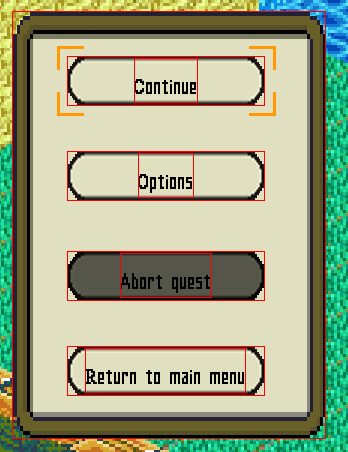Image
Image UI is the simplest element. Is a section of the atlas UI texture and, also, can be a sequence of frames, creating an animation.Button
The Button UI has integrated three main states: idle, on hover and click. Moreover, it has a system of listeners to set logic when button is pressed. In addition, I have created the logic of focus to move between buttons. 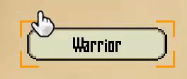Label
The Label element is a little more complex. First, it has basic parameters like text, color and font, and automatically the program calculates the size it occupies on the screen. In addition, it has a warp parameter that will cut the phrases to fit in the warp zone. Also, it has the possibility to set a background. You can choose a color and an alpha value and the program will paint the background behind the label, it is useful in cases that you need readability.Font System
In relation with the UI System, I have created a system to load fonts. We had the problem that for every label we created, a font was opened, so if we created 10 labels with the same font and size, the program will open 10 equal fonts. In order to solve that, I have created a system that only open a font if there is not any equal opened before. To make it more readability, I had set a few fonts with default sizes we will use in a xml file. Every time that a label is created, it will find if there is a font with that characteristics and if it exist, will return that font pointer. Font can be searched by name(string) or by id(enum) we have declared. 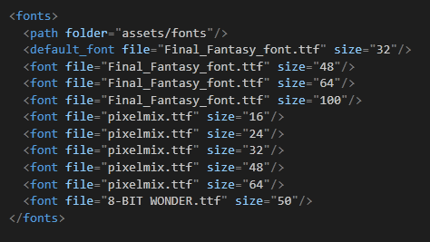Properties
In order to save important data from some things, like entities, map, etc. I have created a class that can save information and is self-administered. It consist in two templates classes, the first one contain the name of the property and the value. The second one, contains a list of properties and some methods to organize the properties. The methods are to create a property and added to the list, get the value of the property by the name and can pass a default value if the property with that name is not found. Other methods are thinked to given a name it returns if a property exists with the same name and false if not, the last method cleans the property list. You can find the file here.Load Entities From Tiled
Creating the information of all entities is a heavy and slowly task. In order to speed up the mechanism I have created a system that loads entity data from a xml file. In this case, I have used Tiled, a map editor, to work comfortably. The latest versions of Tiled allows to work with tilesets and has some interesting functionalities. This is an example of what a spritesheet is seen in Tiled and the exportation in a .tsx file, that has the same behavior that a .xml version. 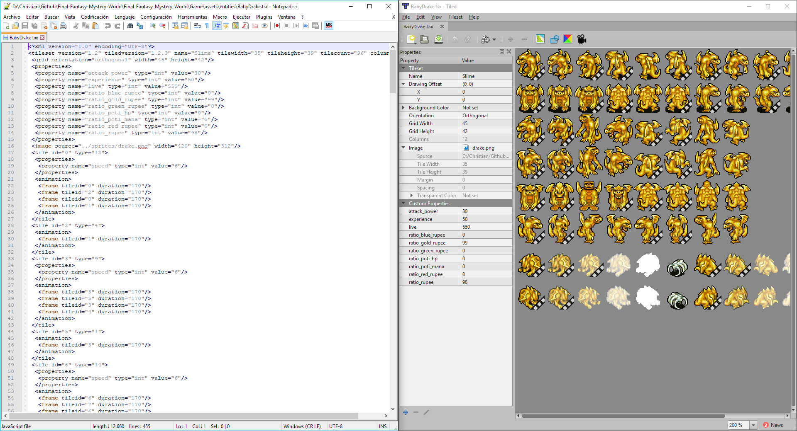 Here we have some basi data like tile size, number of tiles, the path of the image and custom properties that will be loaded with the Properties class mentioned before. Also, every tile has more space to set more data. Here we can see an example: 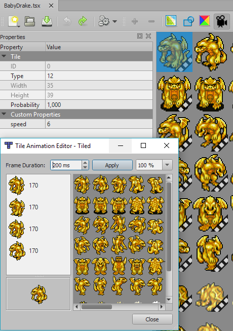 Each tile has an ID number and a type. Also has properties and can hold an animation. In our case we have set a type number equals to the id enum of our animation states, so when we load the entity, the animations are setted automatically. In addition, each tile that has an animation attached, has a property to set the animation speed.Research
In the project 2 subject, every student has to do a research on a topic. I choose Sprite Ordering and Camera Culling to do a research of it. You can find full information of the project here. I recommend seeing that project that contains much more information of that topics that this web page.Sprite Ordering
In summary, the system works with entities and order the vector by the Y position on the screen. In order to make a good logic of sprite ordering, the system works with a pivot that you can set where you want. Also, that pivot can be setted in Tiled, you only have to put a quad with the name "pivot" in the first tile and the program will set it directly.Camera Culling
In relation to the previous topic, sorting a vector is very expensive. In order to optimize sorting and bliting I have applied a camera culling. That system checks if a entity or a tile is between camera edges. We use this in the draw map and in entities, only tiles in camera will blit and only entities in camera will be sorted and blitted. All this explication is explained with more detail in the research web page, with examples and profiling tests.Static Entities
There were a problem with map objects and sprite ordering. Our map is loaded by tiles and can not be sorted with entities. So, I have to implement a technique to create map objects in Tiled that will oper like entities that will make nothing. In order to do that, you can create rectangles as a objects in Tiled and assign a name and a type, so if you want to create, for example a tree, you must put as type the "static" word, and in name "tree". Later, in the static entity class you have to put an "if" comparing the name with "tree" and set all its information. The system allows to create objects with animation, particles and interaction with its logic behind. 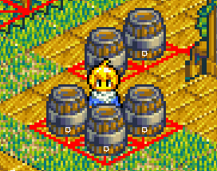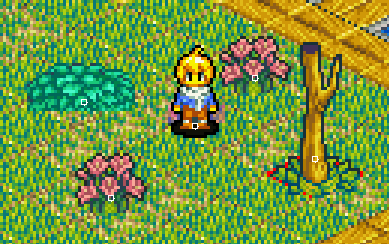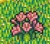Texture Manager
Loading a lot of textures makes the program to run slowly and fill the memory considerably. The first problem we had, was that every entity loaded a texture, in cases that we had same enemies or more than one static entities, we had seen that they could use only one texture and share with the entities that had the same texture. What have I done was creating a number attached to every texture that measures the number of objects that need that texture. If a texture is loaded, program will search if exist a texture with that path, if succeed, will return the pointer of that texture and add one to the dependence texture, if not succeed will load a new texture with dependence 0. When a texture is deleted, will check if the dependence is 0, if not, won't delete the texture and subtracts one to the dependence number.On Collision System
I created a three different types of collision: OnCollisionEnter, OnCollisionStay and OnCollisionLeave. That differentation helps to only do logic when enter in a trigger, leave or keeps colliding.Memory Leaks
In order to avoid memory leaks I just used Visual Studio facilities in this guide to know memory leaks and solve them.Particle System
To create a better expierence I implemented a particle system. I start from an other student research you can find here. I modified a little that system. Also, I created all particles found in the game. 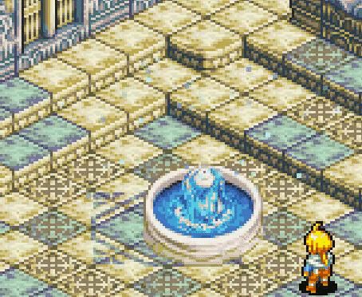
Debug Screen
In order to know some basic game info without stopping the game using breakpoints or creating logs, I created a Debug Screen. 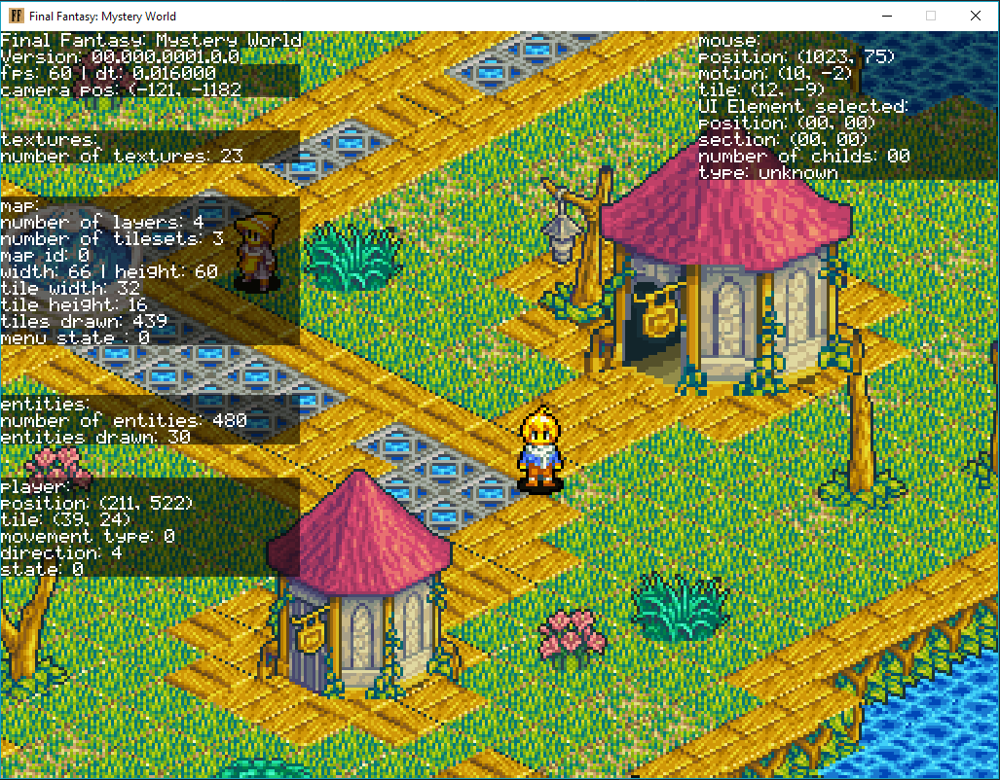 As we can see, there is some basic info. First we can see fps and delta time. Also, displays the camera position. In other rectangle appears the number of textures used in the main scene. In the map info. It appears the number of layers that contains the map, number of tilesets, an identificator of map type, size and tiles are rendering with the camera culling. In entities info we can the number of entities(including the static entities) and the entities drawn. Also appears the info of the player.In addition, it shows the mouse position and ui selected
Math helper
To help in some operations I created some functions to do it. Mainly, it contains basic interpolation functions to move objects using lerp. Other function is to make conversion factors of angles.Improve Cutscene Manager
Once one member implemented Cutscene Manager from other student that you can find here, I improved some things in order to speed up the work of creating cutscenes. First I modified the camera event to set the initial position, last position and the speed and the program will move the camera with a lerp. I also implement a feature in xml file that if you don't put any initial position, te program will set the position the camera was before. If you don't set any destination, the camera will move to the center of the player. In other cases, I have implemented a direction of start and end of an entity, because before only can change the direction moving the entity.NPC System
To create Npcs easily I have created a system that loads npcs info from a xml file. It allows some data given by different forms. Can set graphics by tsx as entities or manually setting the frames and animations. Also, you can set a route that will follow. Also allows some dialog trees to use in the dialog system created by Iván Ropero.State System
We have a mechanic of poisoned, burned and there is a blizzard. To make it easy, that works as entities attached to other entities to make it damage. Also, some of them have particles. All of them are entities because the game is turn-based and the events have to make something in every some turns.

Boss Quest 2: Ice Queen
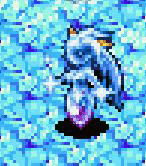 I made the second boss that is located in the second quest. Before doing that, I improved the enemies logic. The Ice Queen has two different phases. The first one, attacks from far and when you approach her and do her some damage, she teleports to other destination. 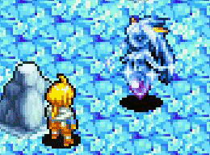
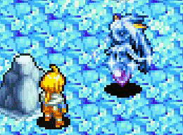
 When she is half or fewer of life, starts the second phase. In that phase, she teleports frequently and
invokes two slimes that hit you. Also, invokes a blizzard permanently.
When she is half or fewer of life, starts the second phase. In that phase, she teleports frequently and
invokes two slimes that hit you. Also, invokes a blizzard permanently.

Rupees Spawn
There is some chests that when you open there create a lot of rupees that expands throughout the room. The system allows a percentatge of every rupee, the distance where can land and the number of rupees to create. The system will find the free tiles to throw the rupees.